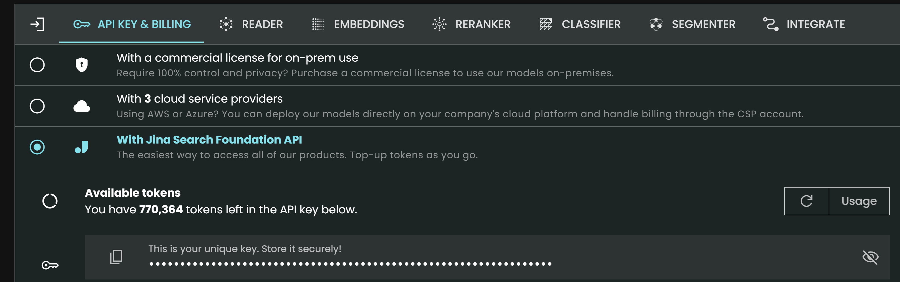

import logging
import os
import time
from urllib.parse import urlparse
import treq
from scrapy.crawler import CrawlerProcess
from scrapy.linkextractors import LinkExtractor
from scrapy.spiders import CrawlSpider, Rule
from slugify import slugify
logger = logging.getLogger(__name__)Web scraper
Reference: - YouTube: Add Any Docs to Replit’s AI Chat - Replit: docs2md
Indicate the doc web, need to have https://docs.. format
DOCS_URL = "https://docs.fastht.ml"Get JINA api token from https://jina.ai/
Scroll down the page, copy API

os.environ['JINA_API_KEY'] =''def urljoin(*args):
"""
Joins given arguments into an url. Trailing but not leading slashes are
stripped for each argument.
"""
return "/".join(map(lambda x: str(x).rstrip('/'), args))
class MarkdownPipeline:
def create_directory_from_url_with_slug(self, url):
parsed_url = urlparse(url)
path_segments = parsed_url.path.strip('/').split('/')
directory_path = './docs/' + self.collection
for segment in path_segments[:-1]:
directory_path = os.path.join(directory_path, segment)
os.makedirs(directory_path, exist_ok=True)
filename = slugify(path_segments[-1])
return os.path.join(directory_path, filename)
def open_spider(self, spider):
self.collection = spider.domain.title().replace('.', '')
os.makedirs(f'./docs/{self.collection}', exist_ok=True)
async def process_item(self, item, spider):
response = await treq.get('https://r.jina.ai/' + item.get('url'),
headers={
'Content-Type':
'text/plain',
"Authorization":
f"Bearer {os.environ['JINA_API_KEY']}"
})
content = await response.text()
url = item.get('url')
directory = self.create_directory_from_url_with_slug(url)
with open(directory + '.md', 'w') as f:
f.write(content)
return item
def close_spider(self, spider):
self.client.close()
class PagingIncremental(CrawlSpider):
name = "docs"
custom_settings = {
'DOWNLOAD_DELAY': '0',
'FEED_EXPORT_ENCODING': 'utf-8',
'DEPTH_LIMIT': '0',
'AUTOTHROTTLE_ENABLED': 'True',
'AUTOTHROTTLE_START_DELAY': '1',
'AUTOTHROTTLE_MAX_DELAY': '3',
"AUTOTHROTTLE_TARGET_CONCURRENCY": '1'
}
rules = (Rule(LinkExtractor(allow=r""), callback='parse', follow=True), )
def __init__(self, url, *args, **kwargs):
super().__init__(*args, **kwargs)
# Visit all found sublinks
print(url)
self.domain = urlparse(url).hostname
self.domain_name = self.domain.split('.')[1]
self.allowed_domains = [self.domain]
self.start_urls = [url]
def parse(self, response):
item = {}
item["url"] = response.url
time.sleep(.1)
yield item
def process_docs(url):
process = CrawlerProcess({
'USER_AGENT': 'Mozilla/5.0',
'ITEM_PIPELINES': {
'__main__.MarkdownPipeline': 1,
},
})
process.crawl(PagingIncremental, url=url)
process.start(stop_after_crawl=True)
if __name__ == "__main__":
process_docs(DOCS_URL)If in jupyter:
process_docs(DOCS_URL)